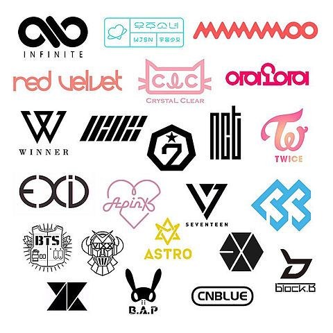

A ideia é fazer um site, onde teremos informações sobre um gênero de música e iremos explicar suas gerações e disponibilizar exemplos dos grupos de sucesso de cada época para que as pessoas possam conhecê-los, além de deixar um espaço onde poderá ter interações, que será nosso fórum.
O gênero apresentado será o K-pop (Korean Pop). O gênero ganhou muito conhecimento nos últimos anos, vários artistas contribuíram para que ele se tornasse conhecido nos dias de hoje. Por conhecemos este nicho, sabemos que muitas pessoas não conhecem muito a história em si, além de não conhecerem os grupos das gerações anteriores, então queremos fazer essa linha do tempo e mostrar um pouco desde o começo dos grupos deste gênero.
Para que as interações sejam possíveis no fórum, será necessário que o usuário faça login. O usuário terá como dar check-in nos grupos que já viu, como forma de controle, caso decida fazer esse tour pelos grupos e ouvir suas músicas e ver seus MV’s (Music Video).
No fórum os usuários poderão interagir entre si, até mesmo dizer quais músicas gostam dos grupos apresentados. Em seu perfil o usuário, terá opções como, editar informações pessoais, trocar senha e excluir conta.
Reforçando nossa ideia, queremos trazer ao público informações que talvez elas ainda não saibam sobre o gênero K-pop, mostrar grupos que fazem parte das primeiras gerações e deixar um espaço para comentários e interações.